One weekend.
- Making the wheels turn
- Getting the camera working
- Wiring it all to a small computer
- Working out how far away things are
Every one of those used to be a weekend of reading on its own.
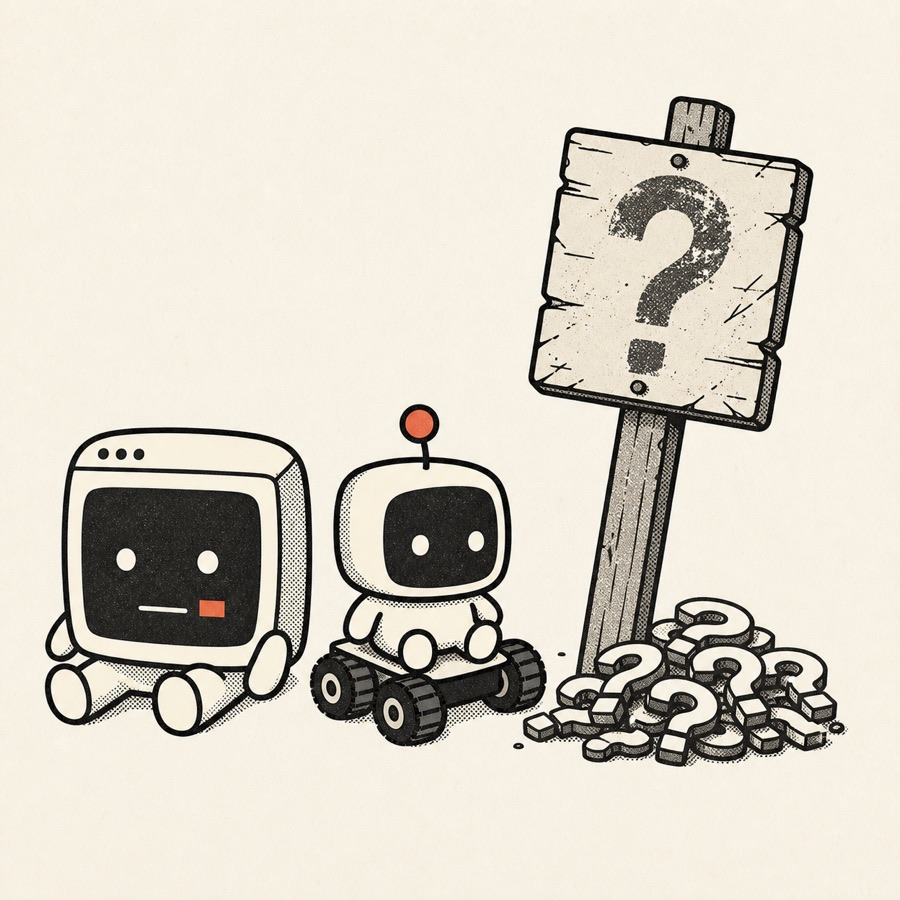
Will AI take my job?
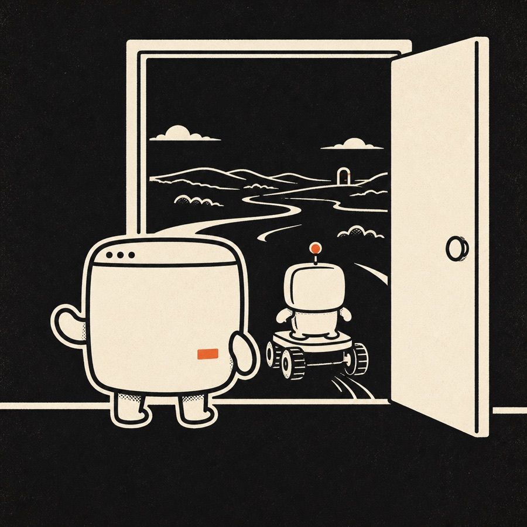
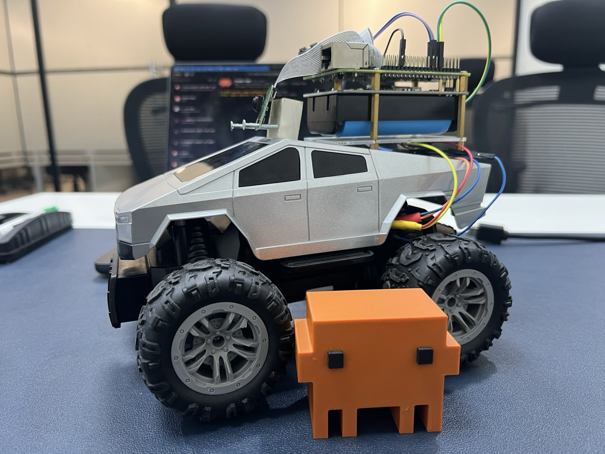
Varun Srinivas — CTO & Chief AI Officer, Coditas
Every one of those used to be a weekend of reading on its own.
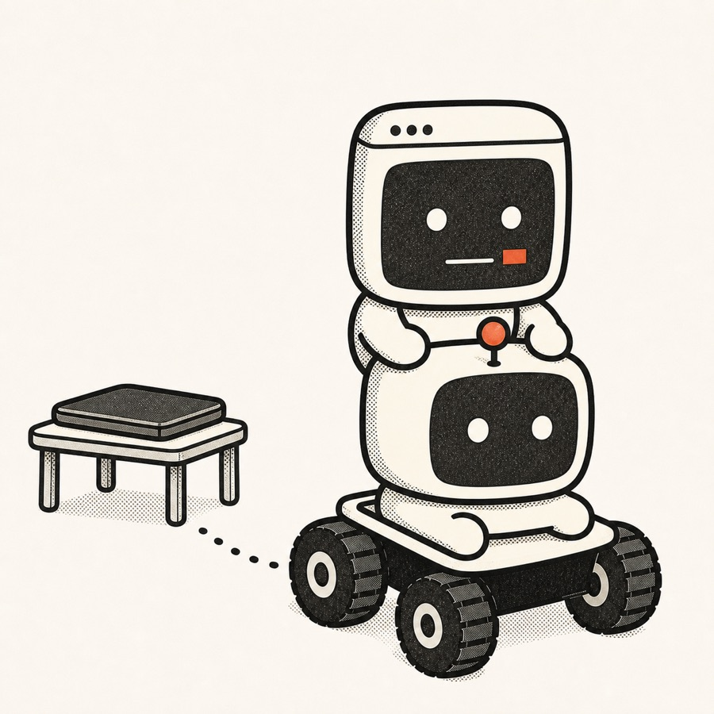
A chat app in a browser can only ever talk about your work. Claude Code runs on your own machine, inside whatever folder you start it in — it reads your real files, changes them, runs commands. So I started it on the Raspberry Pi bolted to the car. It writes a script, runs it, and the wheels actually turn.
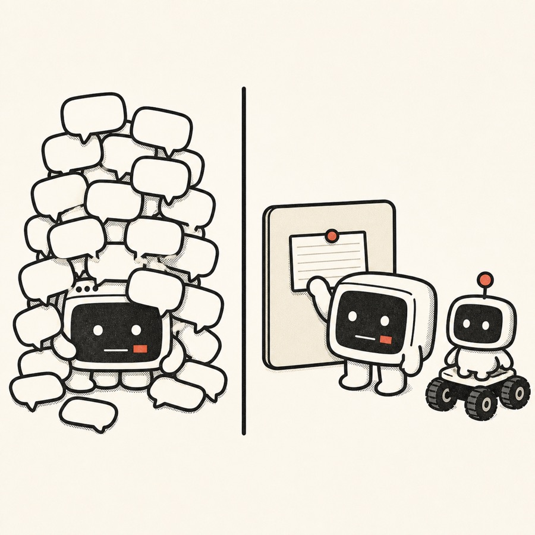
Every session started the same way — which pin drives which motor, how the camera is mounted, what not to touch. So I wrote all of it down once, in a file it reads before it does anything.
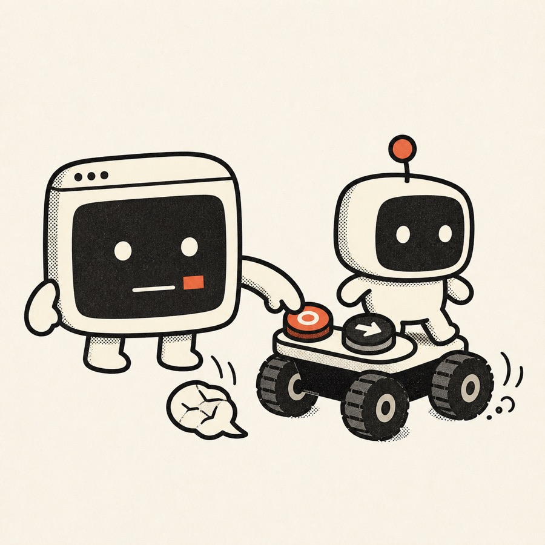
I'd ask it to turn left and it would explain how to turn left. I wanted a driver, not a consultant. So I gave it two functions it can call itself — one returns a frame from the camera, one drives the motors for a set duration.
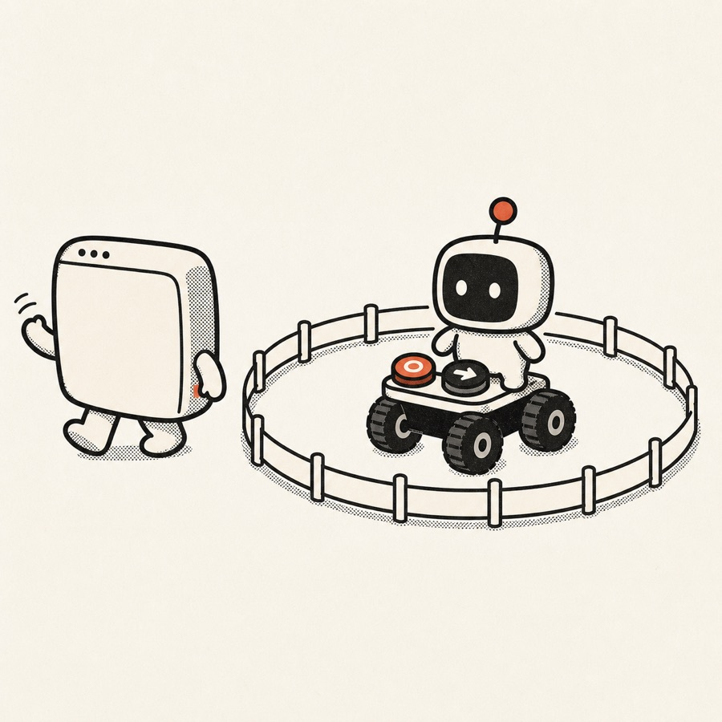
Watching every move rather defeats the point. So I set the boundaries once — how long a single move may run, what happens if the next command never arrives, and what cuts the motors regardless.
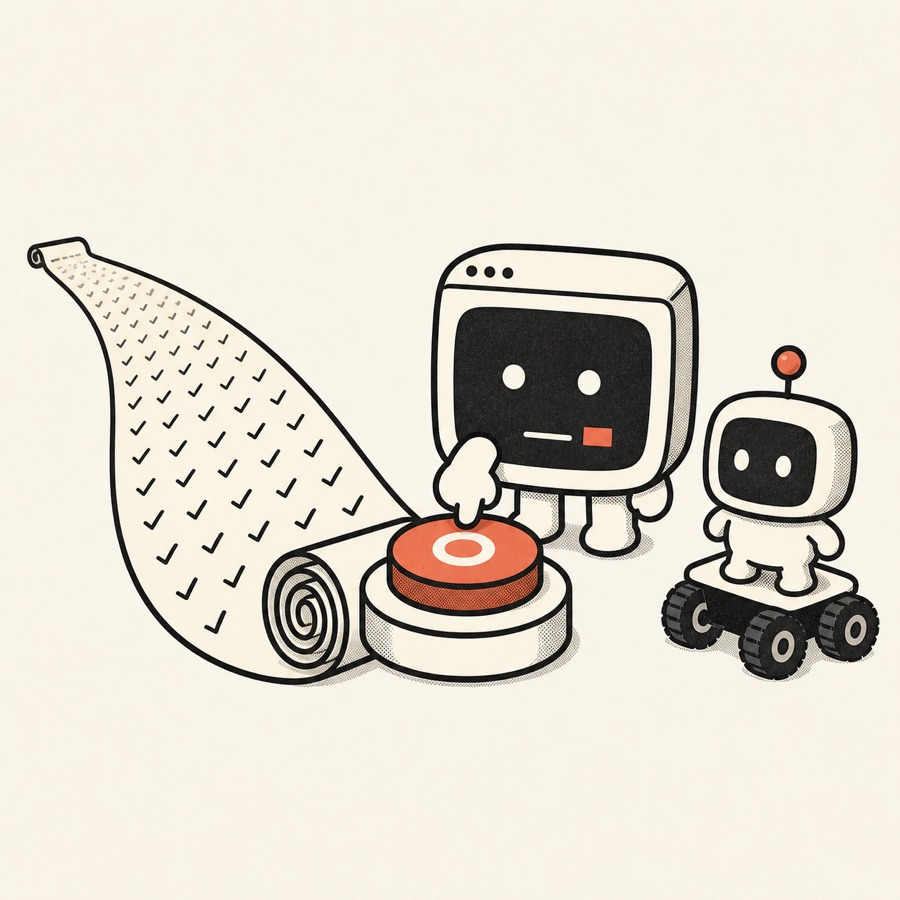
Same setup, same calibration, same handful of instructions at the start of every session. Anything I'd done twice became something I could invoke by name.
Let's look at an example.
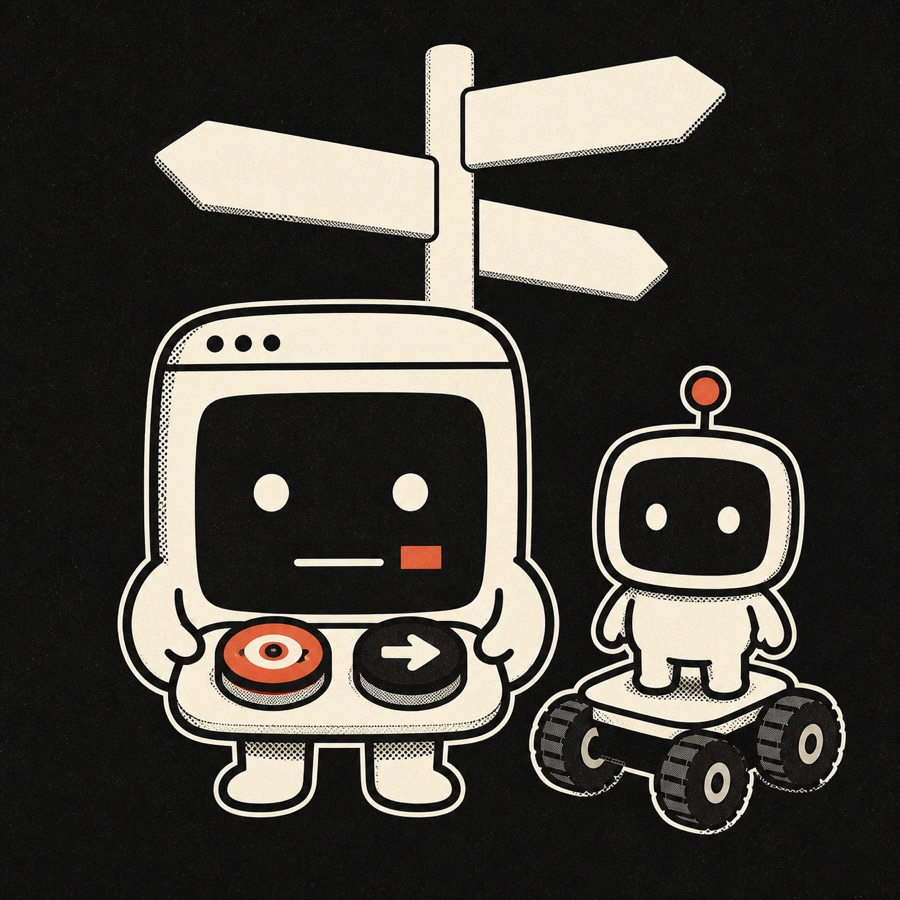
Wakes every half hour. Checks temperature, humidity and soil, looks at the plant through a camera, decides whether to water it or turn on the light. Months of it, no human. The plant's called Sol.
autoncorp.com/biodomeHis annual scan came back on a USB stick that only opened in Windows software he didn't have. He pointed Claude at the stick and asked for something he could actually read.
x.com/tobiHanded over the raw file from an ancestry test and asked which health genes were worth keeping an eye on. Huge file — it went and found the parts that mattered.
x.com/skiranoAnything.
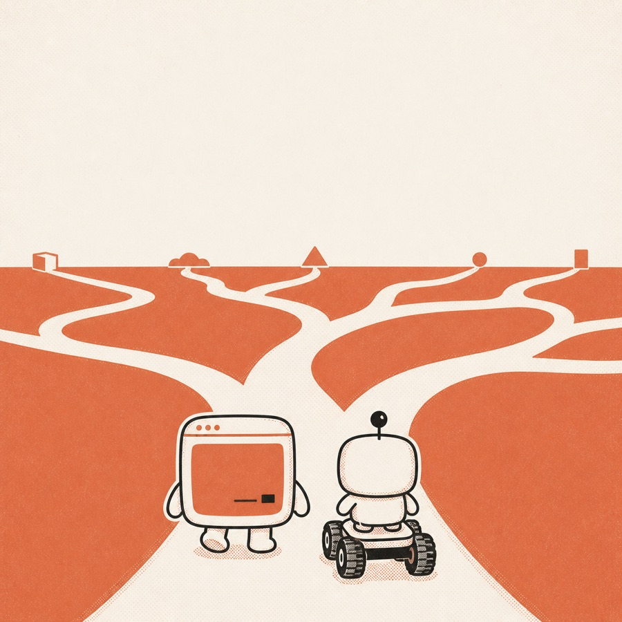
 Claude Code Meetup · Pune
Claude Code Meetup · Pune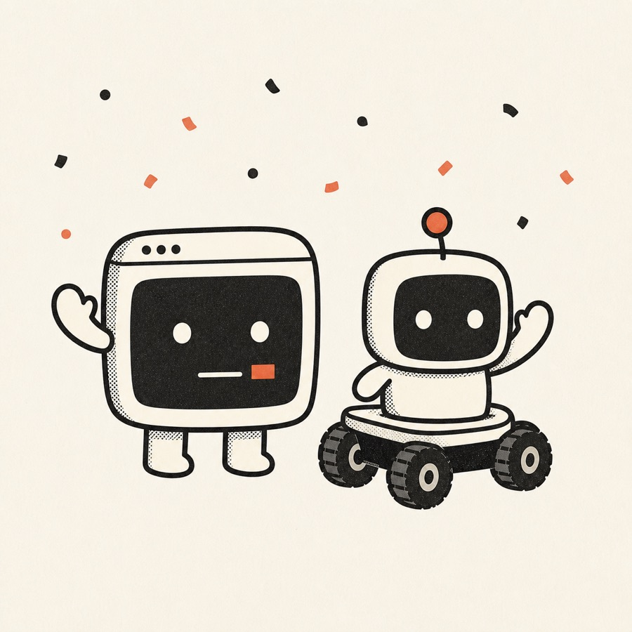
Questions — and feel free to come and check out the rover.